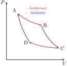

Section 1.1 Basic Concepts (Zeroth Law)
Thermodynamic Properties The properties of a substance are the characteristics that describe its physical and chemical behavior. In general, two types of thermodynamical variables are needed to specity a system completely: extensive variables and intensive variables. Extensive variables depend on the size or extent of the system, such as mass \(m\text{,}\) volume \(V\text{,}\) amount of substance (moles, \(n_k\)), entropy \(S\text{,}\) enthalpy \(H\text{,}\) Gibbs free energy, and total energy. Intensive variables do not depend on the size of the system, such as temperature \(T\text{,}\) pressure \(P\text{,}\) and density \(\rho\text{.}\)
Since fundamental quantities in thermodynamic system are functions of many variables, hence, thermodynamics makes extensive use of calculus of many variables. The functino of varibales that only depends on the current state of the system is called a state function. The change in a state function between two states is independent of the path taken to reach that state. e.g. internal energy \(U\text{,}\) enthalpy, entropy, and Gibbs free energy are state functions. The function that depends on the path taken to reach a particular state is called a path function. The change in a path function between two states depends on the specific process or path taken. e.g. heat \(Q\) and work \(W\) are path functions.
A system is in thermodynamic equilibrium in any perticular state.
-
State Functions (Point Functions): Depend only on the current state of the system, not on how the system reached that state. They are exact differentials. Examples: Internal energy U, enthalpy H, entropy S, temperature T, pressure P, volume V. Change: \(ΔU = U₂ - U₁\) (independent of path).
-
Path Functions: Depend on the path or process followed between states. They are inexact differentials. Examples: Heat Q and Work W. The value of \(\int dW\) or \(\int dQ\) changes with the path taken on a P-V diagram.
If even one property changes, the system moves to a different state. The phase of a substance is also an important aspect of its state, as it can exist in different phases (solid, liquid, gas) depending on the temperature and pressure conditions. A phase is a quantity of matter that is homogeneous throughout, and has a definite chemical composition and physically distinct properties. An example of a single phase is a pure substance like ice, while an example of a multi-phase system is a mixture of ice and water. A phase boundary is the interface between two phases, and it can have unique properties that differ from those of the individual phases. For example, in a glass of ice water, the solid ice is one phase and the liquid water is another.
Subsection 1.1.1 Thermodynamic Equilibrium
A system is in thermodynamic equilibrium when its macroscopic properties are unchanging in time and there are no net flows of matter or energy. In this state, the system is at its lowest possible energy and is stable. The properties of a system in thermodynamic equilibrium can be described by a set of state variables, such as temperature, pressure, and volume. These variables are related to each other through the equations of state, which describe the behavior of the system under different conditions. There are several types of thermodynamic equilibrium, including
-
Thermal equilibrium: No temperature gradient; temperature is uniform (T constant throughout). Zeroth Law of Thermodynamics. (Temperature is uniform throughout the system or when it is in simultaneous mechanical, thermal, and chemical equilibrium (no net changes occur)),
-
Mechanical equilibrium No unbalanced forces; pressure is uniform (no net force or acceleration), and
-
Chemical equilibrium No net chemical reactions or diffusion; composition remains constant. (where the chemical potentials of all species are equal throughout the system).
If any one is missing, the system is in a non-equilibrium state.
-
Quasi-static (Reversible) Process: A process carried out infinitely slowly, so the system remains in equilibrium at every stage. Idealized for maximum efficiency calculations.
-
State Postulate: For a simple compressible system, two independent intensive properties fix the thermodynamic state (e.g., P and T fix the state of an ideal gas).
Equilibrium System: A state in which a system is in balance and there are no net changes occurring with respect to time. Non Equilibrium System: A state in which a system is not in balance and there are net changes occurring with respect to time.
In the state of thermal equilibrium,
\begin{align}
U \amp =U(T,V,n_k) \tag{1.1.1}\\
S \amp =S(T,V,n_k) \tag{1.1.2}
\end{align}
where \(U\) is the internal energy of the system, which is a function of temperature (T), volume (V), and the number of particles of each species (n_k). The values of extensive variables,
\begin{align}
U \amp =U(S,V,n_k) \tag{1.1.3}\\
S \amp =S(U,V,n_k) \tag{1.1.4}
\end{align}
where \(S\) is the entropy of the system, which is also a function of temperature (T), volume (V), and the number of particles of each species (n_k). The state of thermodynamic equilibrium is characterized by the fact that the internal energy and entropy of the system are at their minimum values for a given set of conditions. In this state, the system is stable and there are no net changes occurring with respect to time.
Intensive variables can also be written as derivatives of one extensive variable with respect to another. For example,
\begin{align}
dQ \amp = dU +P\, dV \tag{1.1.5}\\
dQ \amp = T \, ds \tag{1.1.6}\\
\therefore \, dU \amp = dQ - P\, dV = T \, ds - P\, dV \tag{1.1.7}
\end{align}
Differentiating [xref ref="therm_eq5"] w.r.t. "S" at constant V, we get -
\begin{equation}
\left(\frac{\partial U}{\partial S}\right)_V = T\tag{1.1.8}
\end{equation}
Differentiating [xref ref="therm_eq5"] w.r.t. "V" at constant S, we get -
\begin{equation}
\left(\frac{\partial U}{\partial V}\right)_S = -P\tag{1.1.9}
\end{equation}
or,
\begin{equation*}
T= \left(\frac{\partial U}{\partial S}\right)_{V, n_k}
\end{equation*}
\begin{equation*}
p= -\left(\frac{\partial U}{\partial V}\right)_{S, n_k}
\end{equation*}
In non-equilibrium state, irreversible process takes place, which drives the system towards equilibrium state. For non-equilibrium systems, the internal energy and entropy can be expressed as functions of time (t) and is defined locally at every point at \(x\text{.}\) Hence, the energy density at point \(x\) is given by \(u(x,t)\) and the entropy density at point \(x\) is given by \(s(x,t)\text{.}\)
\begin{equation*}
u(x,t)=u[T(x), n_k(x)]
\end{equation*}
and
\begin{equation*}
U = \int u(x,t) dV = \int_{V} u[T(x), n_k(x)] dV
\end{equation*}
Also,
\begin{equation*}
s(x,t) = s[T(x), n_k(x)]
\end{equation*}
and
\begin{equation*}
S = \int s(x,t) dV = \int_{V} s[T(x), n_k(x)] dV
\end{equation*}
also,
\begin{equation*}
N_k = \int_{V} n_k(x) dV
\end{equation*}
where \(U(t)\) is the total internal energy of the system at time \(t\text{,}\) \(S(t)\) is the total entropy of the system at time \(t\text{,}\) and the integrals are taken over the entire volume of the system. The internal energy and entropy of a non-equilibrium system can change with time as the system evolves towards equilibrium. The rate of change of internal energy and entropy can be described by the laws of thermodynamics, which govern the behavior of energy and entropy in non-equilibrium systems. The first law of thermodynamics states that the change in internal energy of a system is equal to the heat added to the system minus the work done by the system. The second law of thermodynamics states that the entropy of an isolated system will always increase over time, and it can be used to determine the direction of spontaneous processes in non-equilibrium systems.
In non-equilibrium system, total energy \(U\) is no longer a function of other extensive variables such as \(S, N_k\) as in equation (1.1.3) and (1.1.4) and system can not have a single tempreture for the entire system. That is, \(U, S, n_k \) and \(V\) are no longer a function of the toher three variables as in (1.1.3) and (1.1.4).
The term
\begin{equation*}
\frac{d_i S}{dt}
\end{equation*}
is the rate of change of entropy due to chemical reactions, diffusion, heat conduction, and other irreversible processes that occur within the system. Here
\begin{equation*}
\frac{d_i S}{dt}
\end{equation*}
is always positive, which means that the entropy of a non-equilibrium system will always increase over time as it evolves towards equilibrium. In an open system, the change in entropy can also be influenced by the exchange of matter and energy with the surroundings, which can lead to a decrease in entropy if the system is losing energy or matter to the surroundings.
\begin{equation*}
\frac{d_e S}{dt}
\end{equation*}
can either be positive or negative, depending on the direction of energy and matter exchange between the system and its surroundings.
In non-equilibrium thermodynamics, the total entropy change of a system, \(dS\text{,}\) is decomposed into two distinct parts: the entropy flow from the environment and the entropy production within the system itself. For any system, the rate of change of entropy is expressed as:
\begin{equation*}
\, \frac{dS}{dt}= \frac{d_iS}{dt} +\frac{d_eS}{dt}
\end{equation*}
-
Entropy Flow from the Environment: This term, denoted as\begin{equation*} \frac{d_e S}{dt}\text{,} \end{equation*}represents the rate at which entropy is exchanged between the system and its surroundings. It can be positive or negative, depending on whether the system is gaining or losing entropy to the environment.
-
Entropy Production within the System: This term, denoted as\begin{equation*} \frac{d_i S}{dt}\text{,} \end{equation*}represents the rate at which entropy is produced within the system due to irreversible processes such as chemical reactions, diffusion, and heat conduction. It is always positive, indicating that the entropy of a non-equilibrium system will always increase over time as it evolves towards equilibrium.
In a Non-Equilibrium Steady State: In a steady state, the total entropy of the system remains constant (\(\frac{dS}{dt} = 0\)), but the system is still active and irreversible. In this case, the entropy flow from the environment is exactly balanced by the entropy production within the system, such that
\begin{equation*}
\frac{d_e S}{dt} = -\frac{d_i S}{dt}\text{.}
\end{equation*}
This means that the system is continuously producing entropy due to irreversible processes, but it is also exchanging entropy with the environment in such a way that the total entropy remains constant. Non-equilibrium steady states are common in many natural and engineered systems, such as chemical reactors, biological systems, and atmospheric processes. They are characterized by a constant flow of energy and matter through the system, which allows it to maintain a steady state despite being out of equilibrium.
Subsection 1.1.2 process and Cycles
Change of State: implies one or more properties of the system has changed. Process: a succession of changes of state. A process can be represented on a graph, such as a pressure-volume \(P-V\) diagram, where the path of the process is shown as a curve connecting the initial and final states. The area under the curve on a P-V diagram represents the work done by or on the system during the process. The change in internal energy of the system during a process can be calculated using the first law of thermodynamics, which states that the change in internal energy is equal to the heat added to the system minus the work done by the system.
Isothermal Process: A process that occurs at constant temperature. In an isothermal process, the internal energy of the system remains constant, and the heat added to the system is equal to the work done by the system. Adiabatic Process: A process that occurs without any heat exchange with the surroundings. In an adiabatic process, the change in internal energy of the system is equal to the work done by the system. Isobaric Process: A process that occurs at constant pressure. In an isobaric process, the work done by the system is equal to the change in volume of the system multiplied by the constant pressure. Isochoric Process: A process that occurs at constant volume. In an isochoric process, the work done by the system is zero, and the change in internal energy of the system is equal to the heat added to the system.
Cycle: a process that returns a system to its initial state. It is a thermodynamic “round trip.”
In a cycle, the system undergoes a series of processes that eventually return it to its original state. The net work done by the system over one complete cycle is equal to the net heat added to the system, as stated by the first law of thermodynamics. Cycles are important in thermodynamics because they can be used to analyze the performance of engines and other devices that convert heat into work. Examples of cycles include the Carnot cycle, which is an idealized cycle that represents the maximum efficiency of a heat engine, and the Rankine cycle, which is commonly used in power plants to generate electricity.
A cycle can be represented on a graph, such as a pressure-volume (P-V) diagram, where the path of the cycle is shown as a closed curve. The area enclosed by the curve on a P-V diagram represents the net work done by the system during one complete cycle. The efficiency of a cycle can be calculated by dividing the net work done by the system by the heat added to the system during the cycle. The efficiency of a cycle is always less than 100% due to irreversibilities and losses in real systems.
In summary, a process is a succession of changes of state, while a cycle is a process that returns a system to its initial state. Both processes and cycles are important concepts in thermodynamics, as they help us understand how energy is transferred and transformed in different systems.

